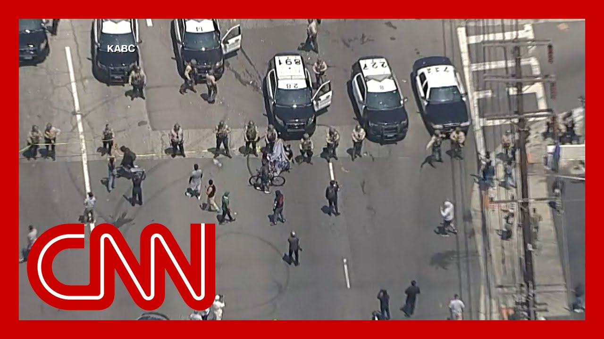

【FBI调查洛杉矶移民抗议活动】
Summary: Breaking news: FBI is investigating clashes between law enforcement and demonstrators in Los Angeles after protests erupted over immigration raids, with police using tear gas and flashbangs to disperse crowds. California Assemblymember Jose Luis Solache describes the scene, including Border Patrol agents staging operations and community opposition to the raids.
摘要： 突发新闻：FBI正在调查洛杉矶执法部门与示威者之间的冲突，抗议活动因移民突袭引发，警方使用催泪弹和闪光弹驱散人群。加州议员何塞·路易斯·索拉奇描述了现场情况，包括边境巡逻人员部署行动以及社区对突袭的反对。

⏱️ Estimated Reading Time: 14 min
📚 六级生词 📚 雅思生词 📚 托福生词 📚 GRE生词 📚 视频里的生词
Breaking news out of Los Angeles, where the FBI says it is investigating clashes between law enforcement and demonstrators.
洛杉矶突发新闻，FBI表示正在调查执法部门与示威者之间的冲突。
These clashes began Friday when crowds gathered around federal law enforcement officers carrying out immigration raids in that area.
冲突始于周五，当时人群聚集在执行移民突袭行动的联邦执法官员周围。
And today, right now, we're seeing police using tear gas and flashbangs to clear the crowds.
而今天，此刻我们看到警方正使用催泪弹和闪光弹驱散人群。
California Assemblymember Jose Luis Solache, who witnessed what was unfolding there, is joining us now on the phone.
加州议员何塞·路易斯·索拉奇目睹了现场情况，现正通过电话与我们连线。
Assemblyman, thank you so much for being here with us.
议员先生，非常感谢您与我们连线。
I know you represent the area, Paramount, where we've been seeing some of this happen.
我知道您代表派拉蒙地区，我们已看到那里发生了一些事件。
Explain to us. Describe to us what you saw today.
请向我们解释并描述您今天看到的情况。
Correct. I've been here since 9 a.m..
没错。我从早上9点就在这里。
When we first saw the agents drive up to my community, I was actually on the freeway with one of the vans from Border Patrol.
当我们第一次看到特工驱车进入我的社区时，我实际上正与边境巡逻队的一辆货车在高速公路上。
And then I did a U-turn type of situation.
然后我掉头返回。
I follow them, and they were here in my community.
我跟随他们，他们来到了我的社区。
There were seven agents waiting to open a fence throughout the morning at about 60 different vehicles have driven in there, 20, 25 of them to us, our Border patrol, logo vehicles and then about 30 plus vehicles were, unmarked vehicles, SUVs.
整个早上有七名特工等待打开围栏，大约60辆不同的车辆驶入，其中20到25辆是带有边境巡逻标志的车辆，另外30多辆是无标志的SUV。
and right now I'm here in the city and with my community, there's about 65, Border patrol agents.
现在我在这里与我的社区在一起，大约有65名边境巡逻人员。
They're there with, guns.
他们带着枪在那里。
They're they're, you know, they're having a staging process.
他们正在进行部署。
Of course, communities out here strong opposing these, raids in our community in Los Angeles.
当然，这里的社区强烈反对这些在洛杉矶我们社区的突袭行动。
I represent this district is strongly here opposing this.
我代表的这个地区强烈反对此事。
And we're looking at live video while you're talking.
在您讲话的同时，我们正在观看实时视频。
I see a lot of smoke.
我看到很多烟雾。
There were some, like, small fly, fires.
有一些小火苗。
It looked like, in the distance from where we're looking at on this video.
从视频中看，远处似乎有火苗。
We can see, people who appear to be gathered together, and we're seeing some sort of, agents as well.
我们可以看到人们聚集在一起，也看到一些特工。
we had a spokesperson from DHS saying that, that these protesters were in a, in a sense, violent, that that's what they're trying to push back against.
国土安全部的一位发言人表示，这些抗议者在某种程度上是暴力的，他们正试图对抗这一点。
Is that been your experience?
这是您的经历吗？
There's definitely a variety of, demonstrators.
示威者确实多种多样。
I, I have to be objective here.
我必须客观地说。
And there's some people that are, of course, are angry.
当然，有些人很愤怒。
They're passionate about why they're why they, you know, agents are here.
他们对特工为何在这里感到愤怒。
you have a variety of folks that obviously are here peacefully, and there are people are a little more aggressive.
有些人显然是和平示威，而有些人则更具攻击性。
And that's just being objective by, of course, community's upset and why they're even here in our community.
这只是客观描述，当然社区很不安，他们为何出现在我们的社区。
Right. And, and.
是的。
And I represent a very high immigrant, high undocumented community in my district, which we're proud of, the the work that we all contribute to this country.
我代表的地区有大量移民和无证居民，我们为他们为这个国家所做的贡献感到自豪。
these are not criminals.
这些人不是罪犯。
These are people are hardworking, people that are contributing.
他们是勤劳、有贡献的人。
And, of course, that's what people are angry about.
当然，这正是人们愤怒的原因。
You're going to come and take, you're doing raids We're looking for people that are at their workplace after that, since you're into this country and and they're not criminals.
你们来突袭，寻找在工作场所的人，他们不是罪犯。
So that's what people are upset about, including myself.
这就是人们包括我自己感到不安的原因。
And it's roughly it's 202 there.
现在大约是下午2点02分。
Los Angeles time in your where you are.
您所在的洛杉矶时间。
How long do you expect this to go on?
您预计这种情况会持续多久？
Does it appear that it's this is going to continue?
看起来会继续吗？
I've made my own calls to, of course, the governor's office to, us that we need to, de-escalate this.
我已致电州长办公室，表示我们需要缓和局势。
They just send these people home so that our community go home and stop.
他们只需让这些人回家，我们的社区就能回家并停止抗议。
Stop this.
停止这一切。
And we need to de-escalate the situation because people are upset.
我们需要缓和局势，因为人们很愤怒。
I don't know how long it's going to be here.
我不知道这会持续多久。
I came here and signing in myself with community, and they've been standing there, stage there, and we've seen throughout the morning different vehicles, leaving the facility.
我来这里与社区站在一起，他们一直站在那里，整个早上我们看到不同的车辆离开设施。
And so we have, a feeling that they're doing great throughout the LA, Los Angeles area.
因此我们感觉他们在整个洛杉矶地区行动。
And we have word now that the FBI is investigating what's going on.
我们现在得知FBI正在调查此事。
Have you seen any FBI agents or anyone like that where you are?
您在那里看到FBI特工或类似人员了吗？
Not as of now.
目前没有。
again, the I've seen, border patrol vests and uniforms that they are wearing.
我再次看到边境巡逻队的背心和制服。
The agents we've got on the place, they've been gassing people as we get close to them, anytime that we're vehicle to leave the facility at the parking lot, they throw these staff.
那里的特工在我们靠近时向人群释放气体，每当有车辆试图离开停车场时，他们就投掷这些物品。
They've been asking people to move away from the area.
他们一直要求人们离开该区域。
And so these vehicles leave the premises.
以便这些车辆离开现场。
And I have. Not seen anyone from the FBI here yet.
我还没有看到FBI的人。
Yeah. How often would you say you're hearing these flash bangs or seeing, this this tear gas deployed?
您听到闪光弹或看到催泪弹使用的频率如何？
throughout the morning?
整个早上？
To be honest, do you actually live closer than just just monitoring station?
说实话，您是否住得比监测站更近？
I was affected myself earlier because, some there was shooting into the artery of the area where I was standing.
我自己早些时候也受到影响，因为有人向我所站区域的主要通道射击。
of course, I ran through that.
当然，我跑开了。
And it was the first time I ever got gas, in my eyes.
这是我第一次眼睛被气体刺激。
And of course, the coughing.
当然还有咳嗽。
so it's my first time experiencing.
这是我第一次经历。
And it's not a good feeling.
感觉不好。
And have you seen anyone be detained or arrested?
您看到有人被拘留或逮捕吗？
we did see about four people that were arrested that were, demonstrators.
我们确实看到大约四名示威者被捕。
they were on this side of the fence demonstrating, again, I can't, justify why they were, why they were being detained, but obviously they they were demonstrating against, being against the agents being here physically, not community.
他们在围栏这边示威，我无法证明他们为何被拘留，但他们显然是在抗议特工出现在这里，而不是社区。
And and again, just to underscore what you were saying, it sounds like, based on your description that, the demonstrators that are gathering range in peaceful, peaceful demonstrators, to some who are being more aggressive, who are, physically, pushing back.
再次强调您所说的，根据您的描述，示威者从和平到更具攻击性，甚至身体对抗。
They've, they've they've been upset.
他们很愤怒。
I've seen their to get closer to the agents.
我看到他们试图靠近特工。
Of course. Right.
当然。
So of course the agents are doing their part to, to show that they're part.
因此特工也在展示他们的存在。
Right. But people are, demonstrating and there's a lot of peaceful demonstration, but there are people that obviously are just upset and they're showing their anger through that.
是的。但人们在示威，很多是和平的，但也有人显然很愤怒并表现出来。
I have encouraged people through my social media to please be, peaceful.
我通过社交媒体鼓励人们保持和平。
That's what demonstrating do not use violence.
示威不要使用暴力。
That's not what we want to do.
这不是我们想做的。
We don't want to add to the narrative.
我们不想加剧冲突。
We want to make sure that people are demonstrating.
我们希望确保人们示威。
We live in a democratic process where people can express their their feelings and how they're feeling.
我们生活在民主进程中，人们可以表达他们的感受。
But of course, do it in a peaceful manner.
但当然要以和平方式进行。
And just again, I just underscore as we're talking to you, we're looking at live video and look, there's a lot of law enforcement there.
再次强调，我们与您交谈时正在观看实时视频，那里有很多执法人员。
just the posture that we're seeing from law enforcement in, in your neighborhood.
从您所在社区的执法人员姿态来看。
this is a big response. It seems.
这似乎是一次大规模行动。
Yes. We definitely don't have any local authorities because we don't we don't engage with a supporting entity of ISIS, strategies that they do.
是的。我们绝对没有地方当局参与，因为我们不支持他们的策略。
So we don't have any local, or state, agencies collaborating with them.
因此没有任何地方或州机构与他们合作。
They are working on their own.
他们独自行动。
I bet on that right at this point.
我确信这一点。
All right. If federal agents.
好的。如果是联邦特工。
Assemblyman Solache, for for your time.
索拉奇议员，感谢您的时间。
We really appreciate it.
非常感谢。
Thank you so much.
非常感谢。
And thank you for reporting this.
感谢您报道此事。
And we have to make sure we, you know, keep community space.
我们必须确保社区安全。
Protests boiling over for a second day in the streets of Los Angeles amid the Trump administration's immigration crackdown.
在特朗普政府的移民打击行动中，洛杉矶街头抗议活动进入第二天。
CNN correspondent Julia Vargas Jones, joining us now from Los Angeles with the very latest, Julia, what's unfolding right now?
CNN记者朱莉娅·瓦尔加斯·琼斯从洛杉矶为我们带来最新消息，朱莉娅，目前情况如何？
Well, these operations are still ongoing in Paramount, California.
这些行动仍在加利福尼亚州派拉蒙进行。
That's just south of Los Angeles.
就在洛杉矶以南。
Jessica, take a listen to what is going on just now.
杰西卡，听听现在的情况。
Now, a woman who took another video of this same scene near that Home Depot there.
一位女性在附近的Home Depot拍摄了同一场景的视频。
She said that she could smell the tear gas in the air.
她说她能闻到空气中的催泪弹气味。
That, officers, federal officers had come to this Home Depot where generally people gather to offer services and that it was unclear if anyone was arrested.
联邦官员来到这个通常人们聚集提供服务的Home Depot，尚不清楚是否有人被捕。
But we did see a response there from the community trying to impede those officers from carrying out the spread.
但我们确实看到社区试图阻止官员执行行动。
We did hear from the Department of Homeland Security just moments ago.
我们刚刚听到国土安全部的声明。
a statement from them saying that, quote, the violent targeting of law enforcement in Los Angeles by lawless rioters is despicable.
声明称，“洛杉矶无法无天的暴徒针对执法人员的暴力行为是可耻的。”
And Mayor Bashs and Governor Newsom must call for it to end.
市长巴什和州长纽瑟姆必须呼吁结束这种行为。
The men and women of Ice put their lives on the line to protect and defend the lives of American citizens.
ICE的男女成员冒着生命危险保护和捍卫美国公民的生命。
that again just now.
再次强调。
We're receiving this, Jessica.
我们刚刚收到，杰西卡。
This is as we're going into day two of these kinds of clashes yesterday.
这是此类冲突进入第二天。
Raids took place in downtown Los Angeles, at least three different locations.
突袭发生在洛杉矶市中心至少三个不同地点。
One of them, another at Home Depot, and the other one was, in the fashion district at a business that was allegedly using fictitious documents for some of their workers, according to the U.S. Attorney's office.
其中一个在Home Depot，另一个在时尚区的一家据称使用虚假文件雇佣工人的企业，根据美国检察官办公室的说法。
that again.
再次强调。
So we have that going on yesterday, today, and then as the news continue to spread yesterday of these raids, that's when we see protests swelling in downtown Los Angeles, part of the city being paralyzed by these protests as the community was coming together to say that they oppose these kinds of targeted raids.
昨天和今天都在进行，随着突袭消息传播，我们看到洛杉矶市中心抗议活动加剧，部分城市因此瘫痪，社区团结起来反对此类针对性突袭。
and that they were, indiscriminate.
而且这些突袭是不加区分的。
they were angered by this, frankly, Los Angeles, a city that has so many immigrants, about 10 million undocumented immigrants in Southern Cal in California.
洛杉矶有大量移民，加州南部约有1000万无证移民，他们对此感到愤怒。
A third of them are here in Los Angeles County.
其中三分之一在洛杉矶县。
So this kind of reaction is to be expected.
因此这种反应是可以预料的。
this is a developing story.
这是正在发展的新闻。
Julia will continue to keep an eye on it as things continue to escalate there in Los Angeles.
朱莉娅将继续关注洛杉矶局势的发展。
we will certainly, keep an eye out for any more developments.
我们一定会关注任何进一步的发展。
thanks so much.
非常感谢。